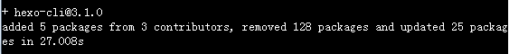
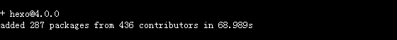
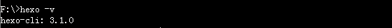
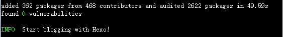
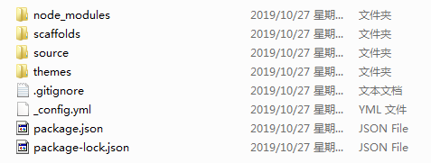
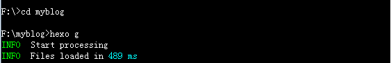
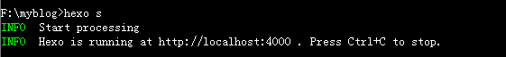
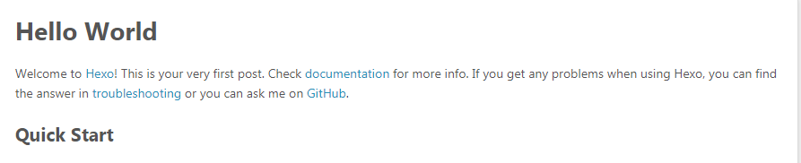
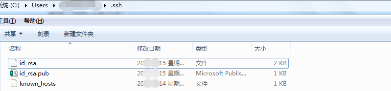
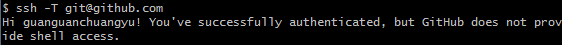

作为一名码农，从校园开始就希望有一个独属于自己的博客站点，有想法不行动，拖拖拖，折腾来折腾去，无意间发现了Hexo，惊鸿一瞥，就走不动路了，心心念念开始了入坑之路
安装Hexo的环境要求
git+node.js 以下为基于windows系统的操作，安装过程请自行百度
如果有兴趣的同学可以尝试nvm进行node.js的安装和管理
安装Hexo Cli客户端
打开cmd控制台，输入npm安装hexo客户端的指令：
1 | npm install -g hexo-cli |
npm 为node.js的包管理工具的执行指令
-g 代表npm全局安装hexo-cli，避免在当前计算机中进行hexo客户端的多版本的重复安装
执行结果如下：
安装Hexo
安装好hexo-cli之后，接下来就需要在本地安装hexo，执行指令如下：
1 | npm install -g hexo |
执行结果如下：
初始化个人的博客本地站点
安装好Hexo之后，输入hexo -v 查看是否安装成功
1 | hexo -v |
执行结果如下：
找到一个自己需要放博客站点的文件夹路径，此处为myblog：
1 | hexo init myblog[本地站点名称] |
myblog也是本地的站点根目录文件夹名称，执行可能会比较缓慢，建议通过国内镜像，如淘宝镜像cnpm进行下载安装
执行结果如下：
项目文件结构
站点结构如下：

| 名称 | 用途 |
|---|---|
| node_modules | hexo需要的依赖包 |
| scaffolds | 站点生成文章的模板 |
| source | 用来存放个人的博客文章.md格式 |
| public | 存放.md文件生成之后的静态文件和相关博客资源（发布生成之后的文件存储位置） |
| theme | 博客展示也主题 |
| _config.yml | hexo博客站点的相关配置文件 |
本地测试博客站点
在myblog\source\_posts存在一个默认的hello-world.md文件，可尝试在本地进行访问，操作如下：
- 切换执行目录到myblog文件夹下
1 | cd myblog[你的站点文件夹路径,此处为myblog] |
- 执行hexo的generate生成静态文件
1 | hexo generate |
执行结果如下：

- 发布后本地运行监听服务
1 | hexo server |
执行结果如下：

- 本地测试访问
在浏览器中访问：http://localhost:4000/
查看到如下效果在表明博客生成成功并能够正常访问

Github搭建个人仓库
注册Github账户，添加一个仓库，仓库命名格式为 当前账户名.github.io
本地构建ssh公钥私钥
启动git bash执行创建全局git相关github的账户名和github的注册使用的邮箱的指令
1 | git config --global user.name "github账户名" |
验证配置的信息
1 | git config user.name |
输出：“github账户名”
1 | git config user.email |
输出：“github注册邮箱”
创建ssh，生成相关的文件，youremail可以和github的注册邮箱不同
1 | ssh-keygen -t rsa -C "youremail" |
生成单个SSH Key时可以连续回车，不输入密钥文件名字和密码 ，记下文件存储路径，一般在[C:/Users/用户名/.ssh]路径下

其中id_rsa保存着自己的私钥，这是需要访问Github时，本地作为信息凭证的保留文件，妥善保管
id_rsa.pub为公钥，需要添加到Github账户中，便于本地能够提交变更到github对应账户，
Github添加个人公钥
在Github的Settings中找到SSH and GPG keys的选项，点击New SSH key按钮，设定好key的名称和将本地生成的id_rsa.pub文件内的内容全部复制到key内容框中，无错后点击保存即可
Github上操作成功后，执行如下git指令用于验证以上配置是否成功：
1 | git -T git@github.com |
执行结果如下：
本地yml文件配置Github对应的仓库
接下来就可以对本地的博客站点进行配置了，找到博客站点所在根目录下的_config.yml文件，找到deploy节点进行如下配置：
1 | deploy: |
配置好以后，测试一下hexo对于该站点是否正确，无异常输出则表示配置没有问题，若有异常请根据提示，自行解决异常
1 | hexo g |
无异常之后，本地通过npm安装hexo-deployer-git工具包，便于本地站点生成的文件发布到github的对应仓库
1 | npm install -g hexo-deployer-git |
发布部署博客到Github
安装成功hexo-deployer-git后，开始再次执行生成本地站点
1 | hexo clean |
Ps:每步执行成功后方可执行下一步指令，不允许同时执行
之后执行本地执行hexo服务，在浏览器中进行本地测试博客站点相关操作，执行之后，就可以发布部署当前博客到Github对应账户：
1 | hexo deploy |
部署成功后，可查看Github的仓库中是否出现相关本地站点生成的发布文件public文件夹下的相关内容
在浏览器中输入http://yourgithubname.io尝试访问你的站点，效果和本地访问的效果一致，至此，个人的网站就托管于Github发布部署成功
设定主题为Next Theme
到上述的发布和部署到Github的操作流程，基本上博客就算是成功了，接下来就需要开始自己的个性化定制了，之前提到过，_config.yml为博客站点的配置文件，Next Theme实际上是Hexo的一个主题系列，个人比较喜欢，所以就决定将原有默认的主题替换掉，替换主题的设定也是从_config.yml进行修改：
1 | theme: landscape |
默认主题是landscape，根据yml文件中默认的提示，去到hexo themes，找到自己喜欢的主题，此处为next，找到next主题，去到对一个的Github仓库，下载下来之后，放到Themes文件夹中，将_config.yml文件中的theme修改为next并保存
1 | theme: next |
此时需要清除一次hexo原有生成的站点，用于改变站点主题重新生成
1 | hexo clean |
测试无误后，再执行发布指令，发布到Github对应的仓库
1 | hexo d |
再次访问http://yourgithubname.io，主题变更为Next则表示成功